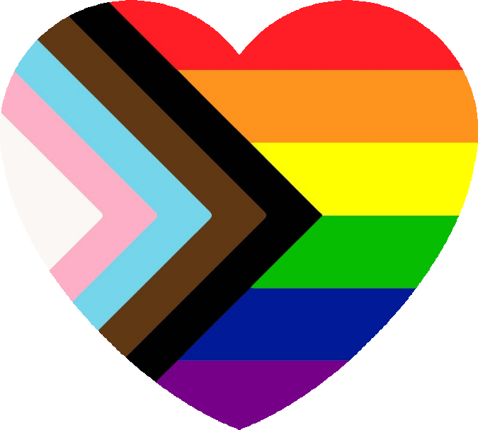
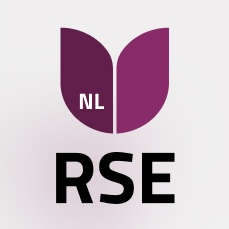

Hi! I'm Izzy.
I'm a research software engineer with a solid background in science and humanities and over ten years' experience.
Work ethic
I'm not a "move fast and break things" kind of person; I prefer "play, ask questions, and be kind." I'm brave enough to be dumb and I'm smart enough to ask someone. I start with the manual and then race into trying things. I like to take things apart to figure out how they work. I prefer writing code that's easy to understand and use, rather than being clever and obtuse. I do meticulous work. I'm optimistic but honest.
Work experience
KNMI Royal Dutch Meteorological Institute
Research engineer, 2019-
This job has me up close and personal with hardware and software. I connect sensors to edge devices to make sure we can speak the same language, and then translate that information back to the KNMI. I program the edge devices, I run servers to collect the data, and I analyze what's come in for accuracy and completeness. I manage the R&D electronics lab and the KNMI's test field in De Bilt. I share responsibilities in a small team using git and scrumban. My toolkit requires any combination of embedded software, Python scripts, Linux, databases, networks, practical web pages, weather sensors, and beyond.
Metasensing BV
Radar engineer, 2015-2019
I was involved in airborne and ground-based radar building and testing, including maintaining codebase and manuals, as well as going on campaigns.
Education
University of Massachusetts, Amherst
Research master's in electrical engineering
Specialization in weather radar engineering
Graduated 2014
Along with coursework in electromagnetism and RF electronics, I helped build and deploy an X-band radar during the storm season in Texas. My thesis was about this campaign and processing and comparing this data with other local radars. I also helped teach electronics classes.
Smith College
Bachelor's in religion and astrophysics
Specialization in Buddhist studies, honors in liberal arts
Graduated 2012
Taking the full spectrum of liberal arts classes and then some, my coursework focused on critical thinking and solid scientific and mathematical skills. Through summer internships with the astronomy department, I published a paper on star formation using data from an infrared space telescope. I learned my first programming language, IDL, and was a teaching assistant for astronomy and physics classes.
About me
I grew up in rural Massachusetts, USA, going for walks in the woods and renting Cosmos from the local library. After graduating, I moved to the Netherlands to live with my wife. My wife is a Classicist and tutor, and makes sure I remain critical of the past and current events. I enjoy reading about history, mostly antiquity, the Silk Road, and syncretism. I also enjoy a good science fiction novel; the more robots in space, the better!
I have been making music since I was a kid, both professionally and in hobby choirs. I am part of a queer choir in Utrecht that focuses on community and the joy of singing.
In my free time, I like working on my home network of a couple of Raspberry Pi's taped together. I am passionate about internet security and privacy, and prefer locally-hosted services: Home Assistant, Nextcloud, and Jellyfin are all part of my system.
I knit and Geocache, but most of my free time is spent hanging out on the couch with my wife and friends, eating good food and watching television, and generally enjoying my 30's.
Contact
I don't have a social media presence, but I look forward to your email: izzy@izzyhendriks.com. Details about and links to above work, as well as references, are available upon request.



© 2025 Izzy Hendriks - credits